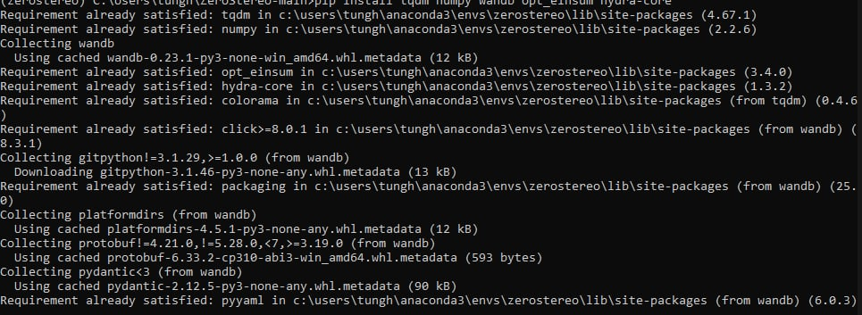
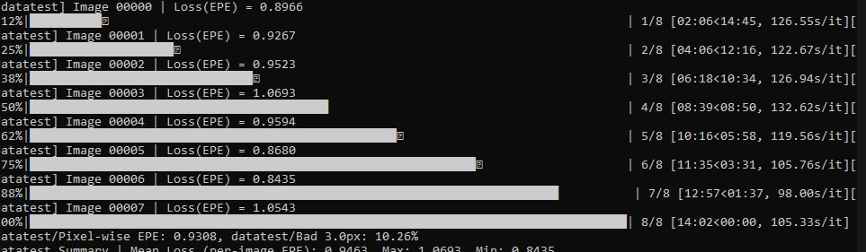
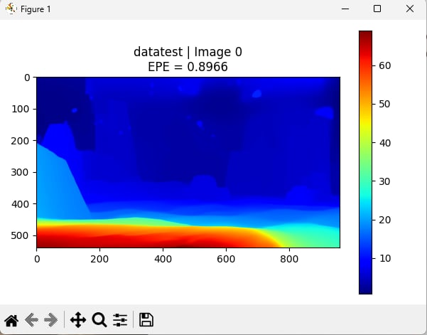
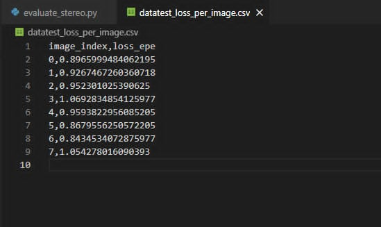

Xử lý dữ liệu lớn bằng kỹ thuật khớp ảnh lập thể
Mô hình RAFT-STEREO được triển khai trên nền tảng Kaggle Notebook. Các thư viện cần thiết được kiểm tra và cài đặt tự động.

Hệ thống kiểm tra file đặc trưng ngữ nghĩa. Nếu chưa tồn tại, mô hình Word2Vec sẽ được tải và sử dụng để chuyển đổi thuộc tính văn bản sang vector.

Thanh màu phía bên phải của ảnh tượng trưng cho:
Xanh → disparity nhỏ (vật xa)
Đỏ → disparity lớn (vật gần)

Mô hình tái tạo được cấu trúc chiều sâu hợp lý
Các vùng gần (phía dưới ảnh) có disparity lớn, chuyển màu mượt → mô hình học ổn địnhPhân tích ảnh nào mô hình làm tốt hay kém
Vẽ biểu đồ EPE theo image index
Kết quả thực nghiệm
